Fusion gene search
FGviewer
A visualization tool for functional features of fusion genes.
BACKGROUND
Due to the uniqueness composed of the two different genes,
the typical gene browser has the clear limitation to show the fusion gene structure and the related feature information.
FGviewer is aiming the effective visualization of the functional features of fusion genes for better prioritization and therapeutic target selection.
FGviewer provides three types viewers from the different molecular biological levels. As the first and unique fusion gene structure browser,
FGviewer will be very useful for the study of chromosomal rearrangement and structural variants,
and understanding the functional landscape of fusion gene at a glance.
ORGANIZATION OF VIEWS
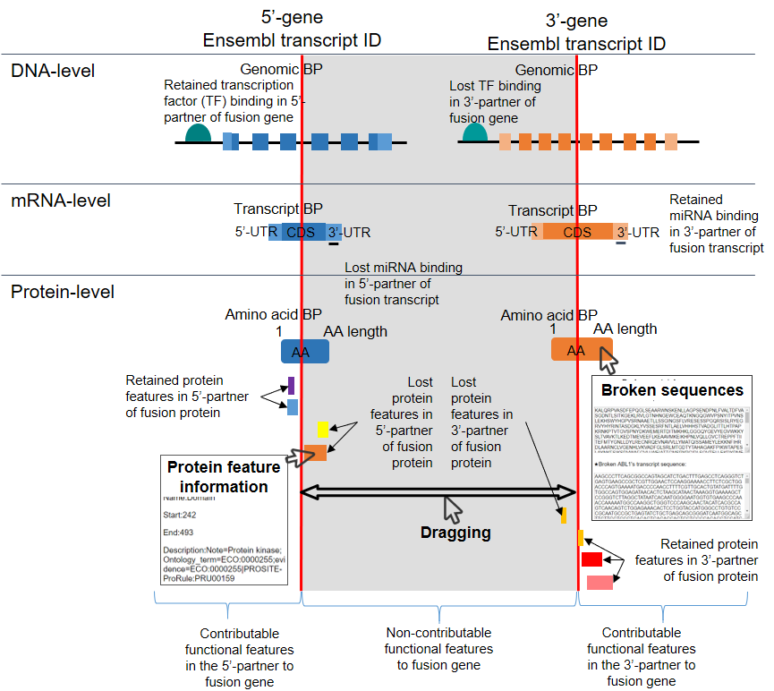
DOWNLOAD
You can download the src of FGviewer from the GitHub
PREREQUISITE
If you want to build a stand-alone version, then follow these intructions.
1. You need install Tornado, a Python web framework with the corresponding version of Python.
2. You need to upload tables into your MySQL database.
3. You need to set up the path for the static directory.
4. You need to run the server.py
1. You need install Tornado, a Python web framework with the corresponding version of Python.
2. You need to upload tables into your MySQL database.
3. You need to set up the path for the static directory.
4. You need to run the server.py
SEARCH EXAMPLES
Each category lists the representative fusion genes with tumorigenesis. You can try to search FGviewer using these fusion gene names. Furthermore, you can go to the FusionGDB to get the intensive functional annotation of each fusion gene.
1. Kinase fusion genes
BCR-ABL1, go to FusionGDB for this fusion gene
EML4-ALK, go to FusionGDB for this fusion gene
2. Transcription factor fusion genes
TMPRSS2-ERG, go to FusionGDB for this fusion gene
PML-RARA, go to FusionGDB for this fusion gene
RUNX1-RUNX1T1, go to FusionGDB for this fusion gene
EWSR1-FLI1, go to FusionGDB for this fusion gene
3. 3'-UTR truncated fusion genes
FGFR3-TACC3, go to FusionGDB for this fusion gene
4. Epigentic modification-associated fusion genes
EWSR1-FLI1, go to FusionGDB for this fusion gene
TMPRSS2-ERG, go to FusionGDB for this fusion gene
KMT2A-MLLT10, go to FusionGDB for this fusion gene
5. Tissue-specific fusion genes
TMPRSS2-ERG, go to FusionGDB for this fusion gene
1. Kinase fusion genes
BCR-ABL1, go to FusionGDB for this fusion gene
EML4-ALK, go to FusionGDB for this fusion gene
2. Transcription factor fusion genes
TMPRSS2-ERG, go to FusionGDB for this fusion gene
PML-RARA, go to FusionGDB for this fusion gene
RUNX1-RUNX1T1, go to FusionGDB for this fusion gene
EWSR1-FLI1, go to FusionGDB for this fusion gene
3. 3'-UTR truncated fusion genes
FGFR3-TACC3, go to FusionGDB for this fusion gene
4. Epigentic modification-associated fusion genes
EWSR1-FLI1, go to FusionGDB for this fusion gene
TMPRSS2-ERG, go to FusionGDB for this fusion gene
KMT2A-MLLT10, go to FusionGDB for this fusion gene
5. Tissue-specific fusion genes
TMPRSS2-ERG, go to FusionGDB for this fusion gene
HELP
- Understanding FGviewer functions.
1. Search, example: BCR and ABL1 fusion gene.
Input query: Official HUGO gene symbols.
2. Legends of protein features.
Protean sequence annotation (features) information
UniProt database provides 39 protein sequence annotation features based on individual protein sequence including six molecule processing features, 13 region features, four site features, six amino acid modification features, two natural variation features, five experimental info features, and 3 secondary structure features. Detailed information about all of the protein features is in UniProt page .
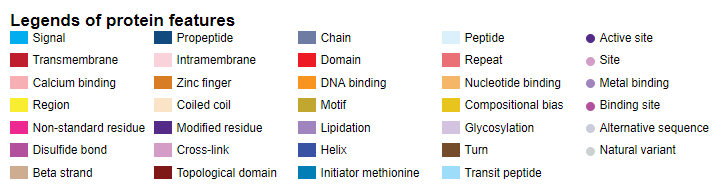
3. Protein-level viewer.
For each gene, it provides the representative accessions of UniProt and Ensembl transcript.
1) The user can move the breakpoint line by dragging. This line is consistent along the three level viewers. See point (a).
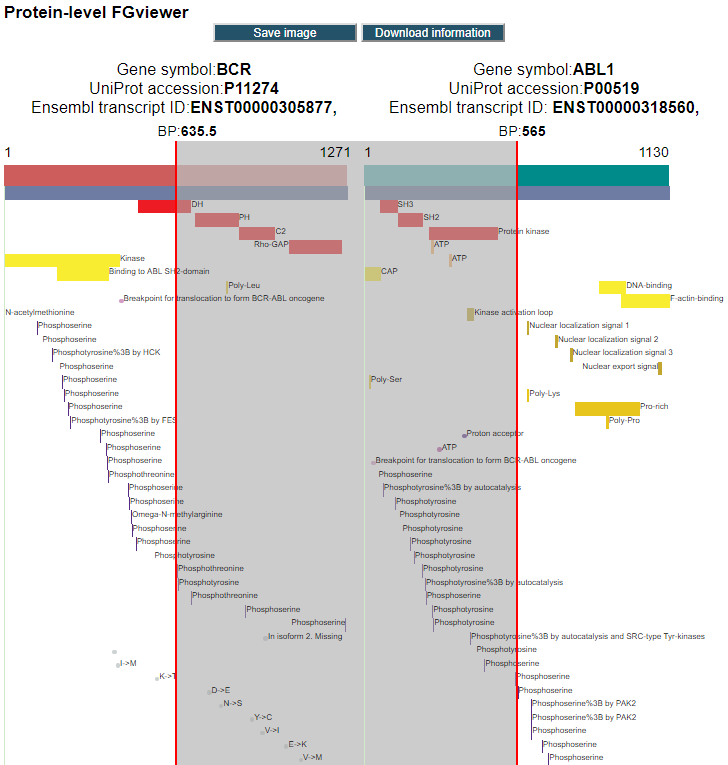
2) When you click the button of 'Save image', then it will provide the option to download png or pdf files as below. See point (b) of image 3. 1).
3) When you click the protein structure bar, then it let you download the broken sequence of amino acids. This sequence is created based on the breakpoint location which is dragged by the user as below. See point (c) of image 3. 1).
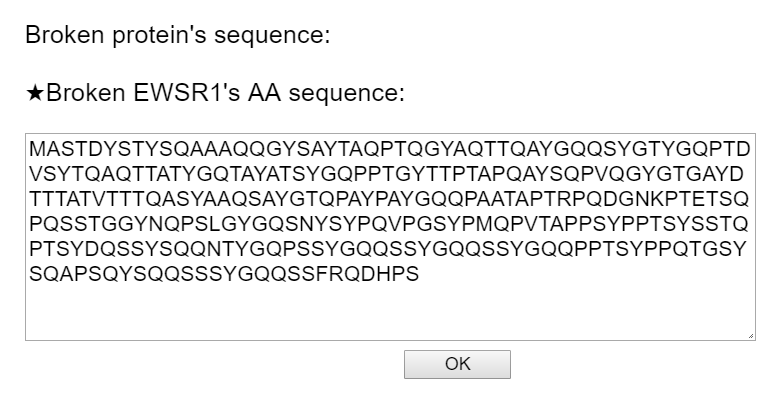
4) When you click the bar of each protein feature, then you can see the detailed information for that feature as below. See point (d) of image 3. 1).
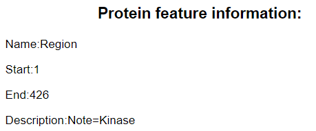
5) When you click the button of 'Download information', then you can download all information of the protein feature retention based on the current breakpoints for both of the genes as below. See point (e) of image 3. 1).
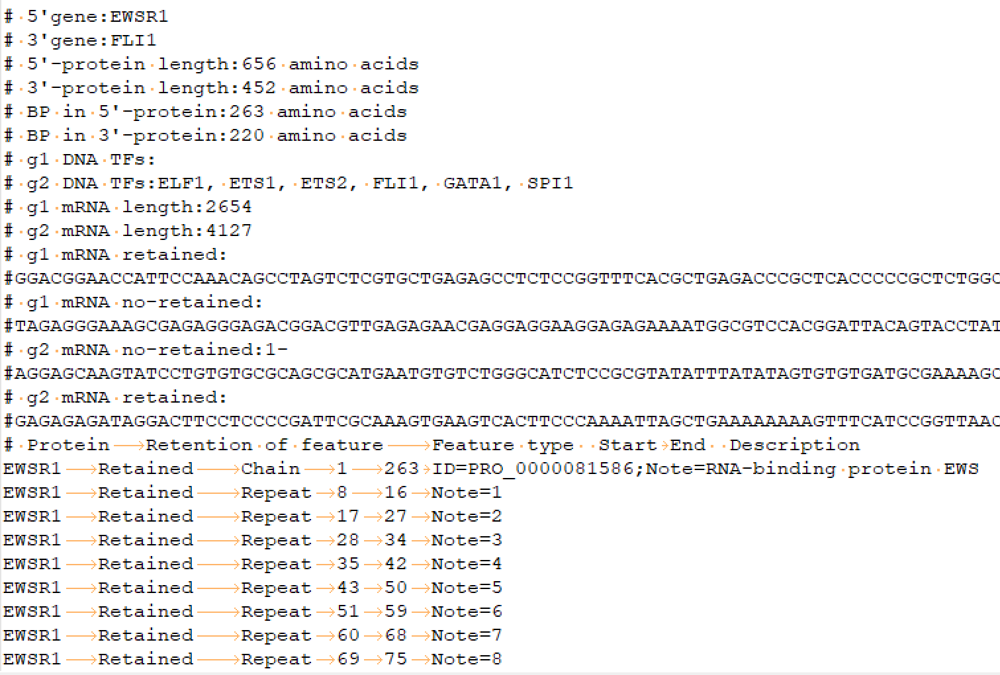
1. Search, example: BCR and ABL1 fusion gene.
Input query: Official HUGO gene symbols.
2. Legends of protein features.
Protean sequence annotation (features) information
UniProt database provides 39 protein sequence annotation features based on individual protein sequence including six molecule processing features, 13 region features, four site features, six amino acid modification features, two natural variation features, five experimental info features, and 3 secondary structure features. Detailed information about all of the protein features is in UniProt page .
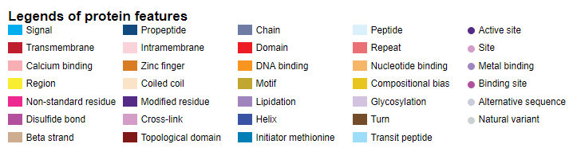
3. Protein-level viewer.
For each gene, it provides the representative accessions of UniProt and Ensembl transcript.
1) The user can move the breakpoint line by dragging. This line is consistent along the three level viewers. See point (a).
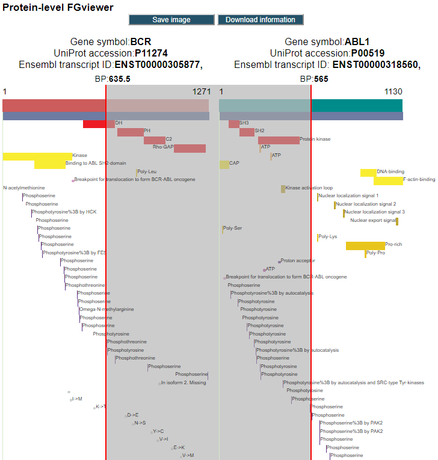
2) When you click the button of 'Save image', then it will provide the option to download png or pdf files as below. See point (b) of image 3. 1).
3) When you click the protein structure bar, then it let you download the broken sequence of amino acids. This sequence is created based on the breakpoint location which is dragged by the user as below. See point (c) of image 3. 1).
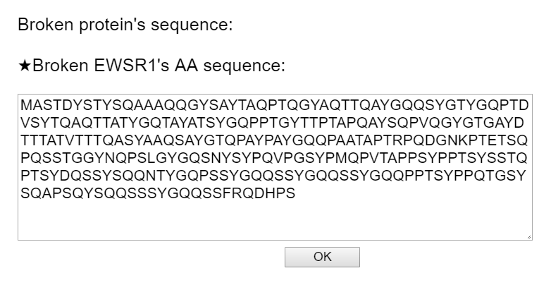
4) When you click the bar of each protein feature, then you can see the detailed information for that feature as below. See point (d) of image 3. 1).
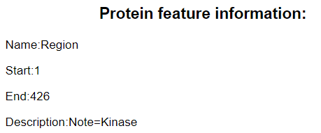
5) When you click the button of 'Download information', then you can download all information of the protein feature retention based on the current breakpoints for both of the genes as below. See point (e) of image 3. 1).
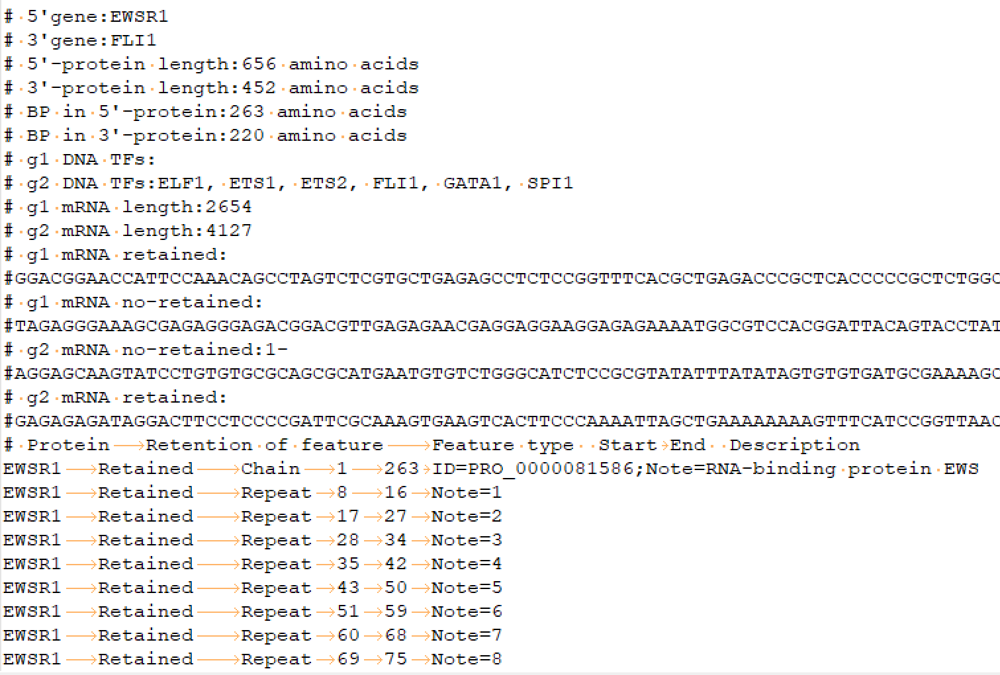
LICENSE
FGviewer is free for non-commercial use. Please contact the authors for commercial use.
CONTACT
1. Cite
Pease quote the following:
"Kim P, Ke Y, Zhou X, FGviewer: an online visualization tool for functional features of fusion genes."
2. Website of Center for Computational Systems Medicine
https://sbmi.uth.edu/ccsm
3. Contact
Pora Kim, MS, PhD and Xiaobo Zhou, PhD
Email: Pora.Kim@uth.tmc.edu & Xiaobo.Zhou@uth.tmc.edu
Mailing address: Center for Computational Systems Medicine
School of Biomedical Informatics
The University of Texas Health Science Center at Houston
7000 Fannin Street, Houston, TX 77030
Pease quote the following:
"Kim P, Ke Y, Zhou X, FGviewer: an online visualization tool for functional features of fusion genes."
2. Website of Center for Computational Systems Medicine
https://sbmi.uth.edu/ccsm
3. Contact
Pora Kim, MS, PhD and Xiaobo Zhou, PhD
Email: Pora.Kim@uth.tmc.edu & Xiaobo.Zhou@uth.tmc.edu
Mailing address: Center for Computational Systems Medicine
School of Biomedical Informatics
The University of Texas Health Science Center at Houston
7000 Fannin Street, Houston, TX 77030
Legends of protein features
Protein-level FGviewer
Gene symbol:BCR
UniProt accession:P1112
Ensembl transcript ID:ENST00000305877
Gene symbol:BCR
UniProt accession:P1112
Ensembl transcript ID: ENST00000305877
Houston (UTHealth)